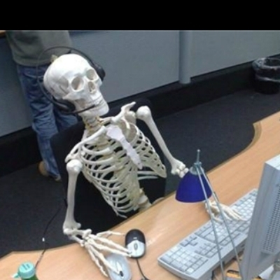
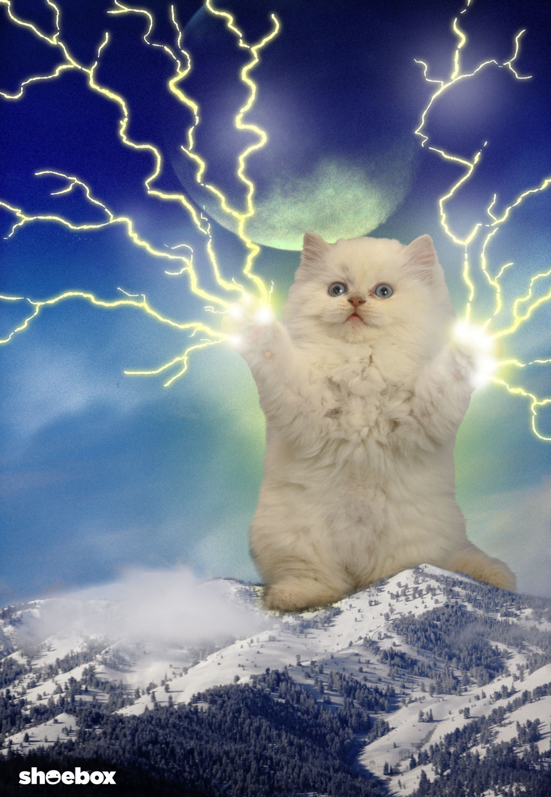
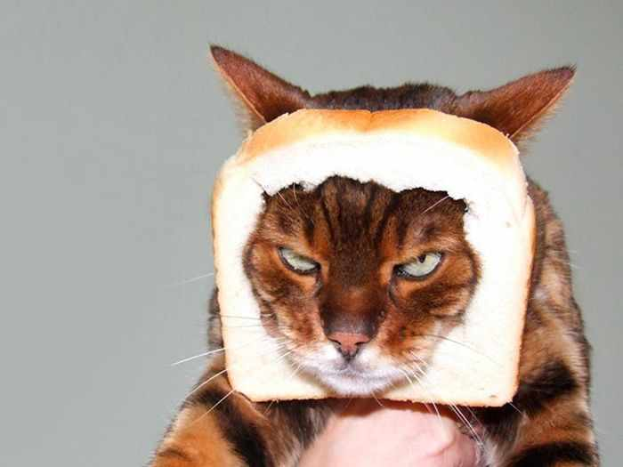
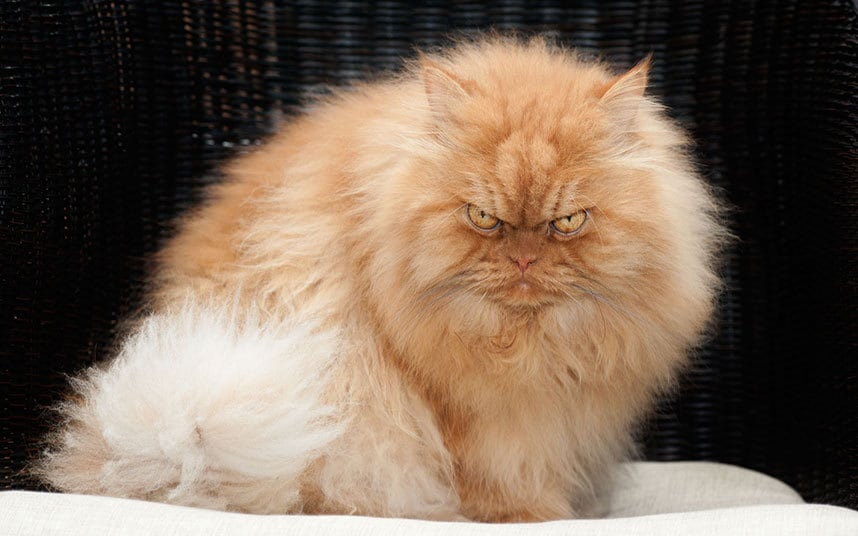

Don't forget your keys
Make cats and bad puns accessible to all!
This presentation contains animated gifs with flashing imagery
Links
This slide deck: smhigley.github.io/keyboard-slides
Dojo 2: dojo.io
Who uses keyboards?

OK, besides cats
- No or almost no vision
- Low vision
- Mobility impairments (Parkinson's, ALS)
Permanent • Temporary • Situational
- Loss of vision at an early age
- Eye surgery
- Broken mouse/trackpad
Maintaining visual focus
How to do better
- Keep the default
:focusstyles - Replace the default
:focusstyles with something visible - Certain styles can make an element unfocusable (
display: noneandvisibility: hidden) - If it's focusable, it should have programmatically accessible text
A tale of two menus
It was the best of focus, it was the worst of focus
Menu 1: focuses when closed

Menu 2: doesn't focus when opened

Takeaways
- Visible & interactive => focus order
- No cursor interaction => no keyboard interaction
display: none;visibility: hidden;or javascript
Like all rules, there are exceptions. Make sure you have a good reason to break them, though!
Keyboard patterns
Tab in, tab out
From the WAI-ARIA Authoring Practices 1.1:
A primary keyboard navigation convention common across all platforms is that the tab and shift+tab keys move focus from one UI component to another while other keys, primarily the arrow keys, move focus inside of components that include multiple focusable elements.
Example:

Bonus pattern: skip links
Focus traps
When should you use a focus trap?
- Modals of any kind
- Slideout content (like the mobile menus earlier)
- ??
Make your focus trap
Traditional options:
- Listen to the
focusorfocusinevent and hijack it. - Set every focusable element in the hidden region to
tabindex="-1"
"Focusable" can get messy
document.querySelectorAll('a[href],
button:not([disabled]),
area[href],
input:not([disabled]),
select:not([disabled]),
textarea:not([disabled]),
iframe,
object,
embed,
*[tabindex],
*[contenteditable]);
New (and improved) options:
<dialog>inert
Unfocusable ≠ hidden
Remember the menus!
Add aria-hidden="true" to your hidden content to ensure Screen readers can't access it.
The finished product:

Semantics vs. Function

role="button"
- Screen Readers care
- Keyboards do not care
Use native elements whenever possible!
Lightning Round: Common Mistakes
1. Removing an element with focus from the DOM
2. Programmatically changing focus in response to something other than a user event
3. Making everything focusable, including content-only elements
4. Positive tab indexes
5. Providing interaction only on :hover events